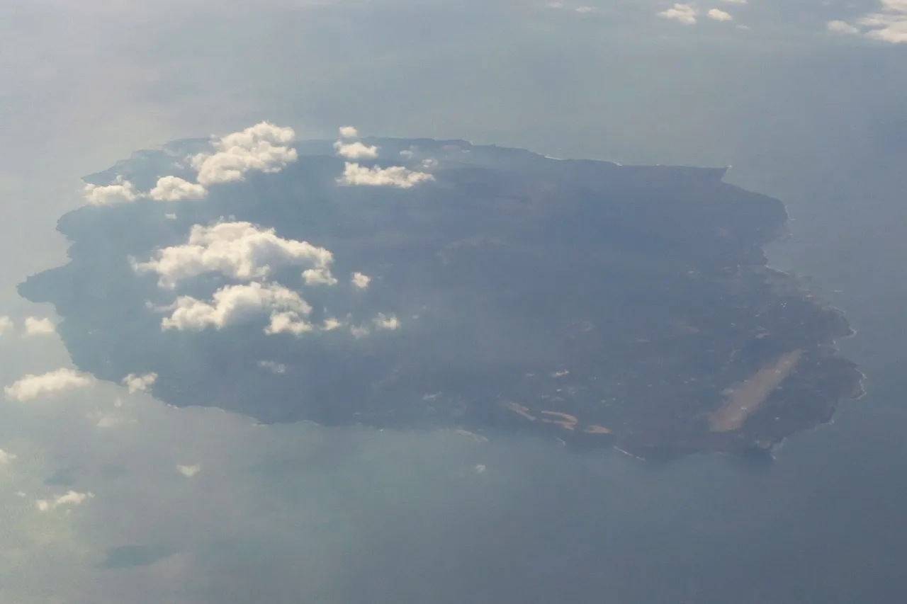

Tokyo's anime islands: five settings you can reach by ferry
Strung south of Tokyo Bay is a chain of nine inhabited islands called the Izu Islands (伊豆諸島). They are not near Tokyo. They are Tokyo — the same metropolis as Shinjuku and Shibuya, with the same phone code region and the same metropolitan government. Five of them are the real settings of anime, one of which is airing right now. This guide gives each island, each work, the specific places you can stand in, how long the boat takes from a pier a ten-minute walk from Hamamatsuchō — and, on the last island, a language that UNESCO lists as endangered and that many linguists do not classify as Japanese at all.

The five islands at a glance
Nine islands in the chain are inhabited. Four of them — Toshima, Shikinejima, Mikurajima and Aogashima — have no anime attached to them. The other five do, and no two of the works are alike: a manga-award-winning coming-of-age story, a Makoto Shinkai blockbuster, a visual-novel adaptation, an original racing series, and a Detective Conan feature film.
| Island | Work | Year | What it uses the island for |
|---|---|---|---|
| Izu Ōshima伊豆大島 | Draw This, Then Die!これ描いて死ね | Anime 2026 (airing) | Named, not fictionalised. A high-schooler on the island discovers she wants to make manga, not just read it |
| Niijima新島 | ISLAND | 2018 | Renamed "Urashima" in the story, but the coastline, port and open-air onsen are drawn from Niijima |
| Kōzushima神津島 | Weathering With You天気の子 | 2019 | Hodaka's home island, the one he runs away from. Never named on screen |
| Miyakejima三宅島 | Tsuukaaつうかあ | 2017 | A sidecar motorcycle racing series built on the island's real road-racing history |
| Hachijōjima八丈島 | Detective Conan: Black Iron Submarine名探偵コナン 黒鉄の魚影 | 2023 | The whole film is set here. Ports, coastline and a resort hotel are recognisably real |
These are not equal. Draw This, Then Die! and Detective Conan name or unmistakably depict their islands, and the local chamber of commerce and the metropolitan islands agency have both engaged with them publicly. Weathering With You never names the island — Kōzushima is a fan location-match. ISLAND renames it outright. Individual shops and benches listed below come from Japanese location-scouting blogs and tour operators, not from the studios. Treat named public places (ports, mountains, beaches) as reliable and small businesses as best-effort.
Izu Ōshima — Draw This, Then Die!
This is the reason to publish this guide now. Kore Kaite Shine — Draw This, Then Die! in English — is Minoru Toyoda's manga about Ai Yasumi, a first-year high school student on Izu Ōshima who reads manga obsessively and then realises she wants to draw it. It won the 16th Manga Taishō in 2023 and the 70th Shogakukan Manga Award in 2024. The Shin-Ei Animation adaptation premiered on 3 July 2026 and streams in English on Crunchyroll.
The island is not disguised. It is Izu Ōshima, part of Tokyo, and the story's texture — the ferry, the volcano, the single high school, the fact that getting to a Tokyo manga event is an overnight logistical problem — is the point of the story rather than set dressing. Ōshima Town's chamber of commerce held a briefing for local businesses about merchandising the series in May 2026, which is the clearest possible signal that the island expects visitors.
| Place | What it is | In the story |
|---|---|---|
| Habu Port波浮港 | A flooded volcanic crater turned fishing harbour on the south of the island, ringed by an old village of steep lanes and stairs | The protagonist's neighbourhood and daily walk |
| Habu Port viewpoint波浮港見晴らし台 | The lookout above the harbour | The high ground her house sits on |
| Mount Mihara三原山 | The active volcano at the island's centre, last major eruption 1986 | The landform behind everything |
| Okada Port岡田港 | One of the island's two main ferry ports; which one is used depends on the wind that day | Where she boards a ship for a manga event on the mainland |
| Shops in Habu鵜飼商店・島京梵天 | A fried-food shop by the stairs and a retro café-shop in the old harbour village | Backdrops on the school route — blog-sourced, not officially confirmed |
Habu Port is the single most photographed thing on Ōshima and it earns it. It was one of the Edo-period sheltering harbours for ships working the coast, and the village behind it still has the wooden buildings and stone stairways of a working port that never got redeveloped, because there was nowhere flat to redevelop it into.
Niijima — ISLAND
ISLAND (2018, studio feel.) adapts a Front Wing visual novel. Its setting, Urashima, is fictional and named after Urashima Tarō, the fisherman of the folk tale who spends what feels like days at the Dragon King's undersea palace and returns to find a century gone. The island as drawn is Niijima.
This is the weakest-known work of the five in the English-speaking world and the one with the least English travel information, which is exactly why it is worth listing. Niijima itself is not obscure at all: it is a two-hour-twenty jet boat from central Tokyo and one of the best surf beaches in the region.
| Place | What it is |
|---|---|
| Habushiura Beach羽伏浦海岸 | A 6 km white-sand surf beach down the island's east side, backed by pale cliffs. It carries the opening sequence |
| Maehama Beach前浜海岸 | The calm west-facing beach by the village |
| Niijima Port新島港 | Where the ferries land, and where the story starts |
| Yunohama open-air onsen湯の浜露天温泉 | A free 24-hour seaside hot spring built in mock-Greek stone architecture. Swimwear required. It looks like nothing else in Japan |
| Moyai statuesモヤイ像 | Carved faces scattered across the island in its soft local kōga stone. The famous Moyai outside Shibuya Station was a gift from Niijima |
The Shibuya connection is worth holding onto: the statue that a million people a year use as a meeting point in central Tokyo is a piece of Niijima, given by the island to the ward it belongs to the same metropolis as.
Kōzushima — Weathering With You
Makoto Shinkai's Weathering With You (天気の子, 2019) opens with Hodaka Morishima running away from a small island to Tokyo, and ends with him coming back to it. The film never names the island. Japanese location scouts matched it to Kōzushima after release, and the correspondences are specific enough that the identification is now standard.
| Place | What it is | In the film |
|---|---|---|
| Tokyo Metropolitan Kōzu High School東京都立神津高等学校 | The island's only high school — and, yes, a Tokyo metropolitan school | Hodaka's school. It is a working school; look from outside |
| Haruka viewpointはるか展望台 | An eastern lookout pavilion | Where students gather |
| Takō Bay / Miura Port多幸湾・三浦港 | The island's eastern harbour, under a sheer cliff face | The port in the closing sequence |
| Senryō Pond千両池 | A rock pool on the wild south-west coast | Mid-film island scenery |
There is a piece of local mythology that fits the film so neatly it is worth knowing before you go. Kōzushima's name is usually read as "the island of the gathering of gods," and its Mizukubari legend has the deities of the whole Izu chain meeting on this island to divide up the region's fresh water. A film about a girl who can control the weather, whose hero comes from the island where the gods argued over water, is a coincidence the film does not comment on.
Miyakejima — Tsuukaa
Tsuukaa (つうかあ, 2017) is an original anime about sidecar motorcycle racing, and it is set on Miyakejima because Miyakejima has a real motorsport history: road racing on the island's loop road. The Miyakejima Tourist Association acknowledged the series publicly when it aired.
| Place | What it is |
|---|---|
| Ago and Route 212阿古・都道212号線 | The village and the red-surfaced metropolitan road above it, used as the race circuit in the series |
| Akabaakatsuki Bridge赤場暁橋 | A small bridge near Hyōtan-yama, used in the closing stages of the race |
| Maigo-shii迷子椎 | A giant old chinquapin tree near Tairo Pond, designated a natural monument by Miyake Village. The name means "lost-child chinquapin" |
Miyakejima is also the island in this list with the most recent volcanic history: the 2000 eruption forced a full evacuation of every resident, and the island was not reopened to returning residents until 2005. Sulphur dioxide monitoring is part of ordinary life here, and visitors are advised to check the gas advisories. It is a working island rather than a resort, and the anime treats it as one.
Hachijōjima — Detective Conan: Black Iron Submarine
The 26th Detective Conan film, Black Iron Submarine (黒鉄の魚影, 2023), is set on Hachijōjima almost end to end. It is the most-visited of these five as a pilgrimage, and the one place in this guide where English-language coverage already exists — so the value here is the specific list, and the fact that it sits on the same ferry line as the other four.
| Place | What it is | In the film |
|---|---|---|
| Sokodo Port底土港 | The island's main ferry harbour and beach | Where the group arrives by ship |
| Yaene Fishing Port八重根漁港 | The west-side harbour | Departure point for the whale-watching boat |
| Nanbara Senjōiwa coast南原千畳岩海岸 | A black lava field running into the sea, roughly 500 m long, from the 1605 eruption of Hachijō-Fuji | Where Conan comes out of the water |
| Ōzato stone walls大里の玉石垣 | Lanes walled with rounded beach cobbles, hauled up from the shore and stacked without mortar | A pursuit on foot |
| Hachijō-Fuji (Nishiyama)八丈富士・西山 | The 854 m volcano that gives the island its silhouette | Visible throughout; the shape you see from the arriving ship |
| Lido Park Resort Hachijōjimaリードパークリゾート八丈島 | A working hotel on the island | The model for the Suzuki family's "Bell Tree Resort" |
The lighthouse in the film is invented. There is no real counterpart on the island, so do not go looking for it.
The Ōzato stone walls deserve more than a line. They were built by a corvée system: islanders were required to carry stones up from the beach, and the walls that resulted are now the reason the district looks the way it does. It is a piece of Edo-period labour history you can walk through in ten minutes.
Some links above are affiliate links. We may earn a commission at no extra cost to you. We only list services we'd use ourselves.
The island where Japanese isn't Japanese
This is the part no travel guide will tell you, and it is the best reason on this page to go to Hachijōjima rather than any other island.
Hachijōjima and Aogashima have their own speech, called locally shima-kotoba (島言葉, "island speech") and known to linguists as Hachijō. It is not a regional accent. Hachijō descends from Eastern Old Japanese — the eastern variety recorded in the Azuma poems of the 8th-century Man'yōshū and in the Fudoki of Hitachi Province — and it kept grammatical and phonetic features that mainland Japanese lost more than a thousand years ago. It is the only surviving descendant of that branch. On the standard test of mutual intelligibility, it is usually treated as a separate Japonic language rather than a dialect of Japanese: a fluent Tokyo speaker cannot simply follow it.
In 2009 UNESCO identified eight endangered languages in Japan. Six are Ryukyuan, one is Ainu, and one is Hachijō — the only one of the eight spoken in what is administratively Tokyo. Native speakers now number in the low hundreds and are mostly elderly. Preservation work on the island has included performing kamishibai paper theatre in the language for children.
Learners are usually taught that Japanese has dialects — Kansai-ben, Tōhoku-ben — that differ in accent and vocabulary but sit on one continuum. Hachijō is the counter-example: an offshoot that separated early enough that the continuum argument stops working. You will not learn it and you will not need it. But standing in a place inside Tokyo where the local language is on a UNESCO endangerment list changes what you think "Japanese" refers to.
Practically: everyone on Hachijōjima speaks standard Japanese, and you will not encounter Hachijō as a tourist unless you seek it out. Ask at the Hachijō Town history museum, or listen for it between older residents.
Getting there
Every island here is served by Tokai Kisen from Takeshiba Pier (竹芝桟橋) in Minato City, about ten minutes' walk from Hamamatsuchō Station or straight off the Yurikamome at Takeshiba. Two kinds of boat run: a large overnight passenger ferry, and a hydrofoil "jet boat" that is far quicker but only serves the northern islands.
| Island | Jet boat from Takeshiba | Large ferry from Takeshiba | By air |
|---|---|---|---|
| Izu Ōshima | from 1 h 45 | from 6 h (overnight) | Chōfu, about 25 min |
| Niijima | from 2 h 20 | from 8 h 30 | Chōfu, under 1 h |
| Kōzushima | from 3 h 05 | from 9 h 55 | Chōfu, under 1 h |
| Miyakejima | — | from 6 h 30 | Chōfu, about 45 min |
| Hachijōjima | — | from 10 h 20 | Haneda, about 55 min |
The overnight ferry is not a compromise, it is the better experience: you board in the evening in central Tokyo, sleep, and wake up off a volcano. Ōshima can be done as a day trip by jet boat. Hachijōjima realistically wants two nights.
Sailings are cancelled for weather far more often than mainland Japanese transport is, and the word for it is 欠航 (kekkō). Which port a ship uses can also change on the morning depending on wind — Ōshima has two, and the announcement comes the same day. Build a spare day into any island trip, check the operator's status page the night before and the morning of, and do not book a same-day onward international flight.
Ōshima, Toshima, Niijima, Shikinejima and Kōzushima sit on one jet boat line, so combining two or three of them in a trip is straightforward. Hachijōjima is the outlier: it is 287 km south and is best flown to.
The Japanese you'll actually use
| Japanese | Reading | Meaning |
|---|---|---|
| 伊豆諸島 | Izu shotō | the Izu Islands — the chain, all of it Tokyo |
| 竹芝桟橋 | Takeshiba sanbashi | Takeshiba Pier — where the boats leave |
| ジェット船 | jetto-sen | jet boat — the fast hydrofoil |
| 大型客船 | ōgata kyakusen | large passenger ferry — the overnight one |
| 欠航 | kekkō | cancelled sailing. The single most useful word on this page |
| 着岸港 | chakugan-kō | arrival port — the one that can change on the day |
| 聖地巡礼 | seichi junrei | anime pilgrimage, literally "sacred-site pilgrimage" |
| 島寿司 | shima-zushi | island sushi — fish marinated in soy, with mustard instead of wasabi |
| 明日葉 | ashitaba | the island herb, in tempura and noodles everywhere |
| 島焼酎 | shima-jōchū | island shōchū |
| 天然記念物 | tennen kinenbutsu | natural monument — protected, don't touch |
| 島言葉 | shima-kotoba | "island speech" — what Hachijō speakers call their own language |
Want these to stick? The free JLPT battle quiz drills travel vocabulary like this with spaced repetition.
Start with the general guide to anime pilgrimage (seichi junrei) →, then the single-place deep dives: Evangelion in Hakone →, the One Piece statues of Kumamoto →, the Slam Dunk level crossing →, the Sailor Moon manholes of Tokyo → and the town that plays Ultraman on its loudspeakers →.
Common questions
Q. Are the Izu Islands really part of Tokyo?
A. Yes, administratively. The Izu Islands are governed by the Tokyo Metropolitan Government and are divided into towns and villages of Tokyo — Ōshima Town, Niijima Village, Kōzushima Village, Miyake Village, Hachijō Town and others. Hachijōjima is roughly 287 km south of central Tokyo and is still Tokyo.
Q. Which anime is set on which island?
A. Izu Ōshima — Draw This, Then Die! (2026). Niijima — ISLAND (2018), where it is renamed Urashima. Kōzushima — Weathering With You (2019), unnamed on screen. Miyakejima — Tsuukaa (2017). Hachijōjima — Detective Conan: Black Iron Submarine (2023). Izu Ōshima was also the home island in Vividred Operation (2013).
Q. Is Draw This, Then Die! available in English?
A. Yes. The Shin-Ei Animation series premiered on 3 July 2026 and streams on Crunchyroll. The manga, by Minoru Toyoda, won the 16th Manga Taishō in 2023 and the 70th Shogakukan Manga Award in 2024.
Q. Does Weathering With You ever say where Hodaka is from?
A. No. The island is never named in the film. Japanese location scouts identified Kōzushima after release by matching the high school, the Haruka viewpoint, Takō Bay and Senryō Pond. Treat it as a very well-supported fan identification rather than an official statement.
Q. How long does the ferry take?
A. From Takeshiba Pier in central Tokyo: Izu Ōshima from 1 h 45 by jet boat or from 6 h by overnight ferry; Niijima from 2 h 20; Kōzushima from 3 h 05; Miyakejima from 6 h 30 by ferry; Hachijōjima from 10 h 20 by ferry, or about 55 minutes by air from Haneda.
Q. Can I visit more than one island in a trip?
A. Yes, for the northern group. Ōshima, Toshima, Niijima, Shikinejima and Kōzushima are on one jet boat route, so two or three in a few days is normal. Hachijōjima is much further south and works better as a separate trip by air.
Q. What is most likely to ruin the plan?
A. Weather. Sailings are cancelled (欠航, kekkō) considerably more often than mainland trains are, and on Ōshima the arrival port can be switched on the day depending on wind. Leave a buffer day.
Q. Is Hachijō really a separate language, not a dialect?
A. Many linguists classify it that way. Hachijō descends from Eastern Old Japanese — recorded in the Azuma poems of the 8th-century Man'yōshū — and retains features lost in mainland Japanese; on the mutual-intelligibility test it is generally treated as a distinct Japonic language. UNESCO listed it in 2009 as one of eight endangered languages in Japan, alongside Ainu and six Ryukyuan languages. Native speakers now number in the low hundreds.
Q. Do I need Japanese to visit?
A. More than you would in Shinjuku. These are small communities with limited English signage, and ferry announcements are in Japanese. Basic travel Japanese and a translation app will get you through comfortably.